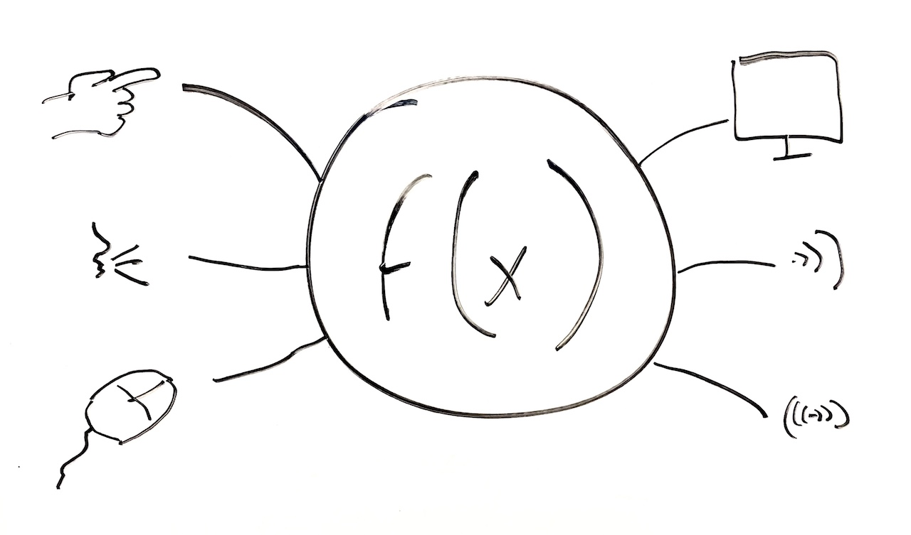
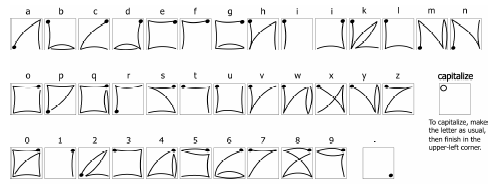

Thus far, most of our discussion has focused on what user interfaces are. I described them theoretically as a mapping from the sensory, cognitive, and social human world to these collections of functions exposed by a computer program. While that's true, most of the mappings we've discussed have been input via our fingers and output to our visual perceptual systems. Most user interfaces have largely ignored other sources of human action and perception. We can speak. We can control over 600 different muscles. We can convey hundreds of types of non-verbal information through our gaze, posture, and orientation. We can see, hear, taste, smell, sense pressure, sense temperature, sense balance, sense our position in space, and feel pain, among dozens of other senses. This vast range of human abilities is largely unused in interface design.
This bias is understandable. Our fingers are incredibly agile, precise, and high bandwidth sources of action. Our visual perception is similarly rich, and one of the dominant ways that we engage with the physical world. Optimizing interfaces for these modalities is smart because it optimizes our ability to use interfaces.
However, this bias is also unreasonable because not everyone can see, use their fingers precisely, or read text. Designing interfaces that can only be used if one has these abilities means that vast numbers of people simply can't use interfaces (Ladner 2012). And this is no small population: according to a 2004 World Bank survey (World Bank is an international financial institution that seeks to reduce poverty), one billion people (15% of humanity) has some form of disability that impacts their daily activities. That includes people who are blind, low-vision, color blind, deaf, hard of hearing, unable to speak, or posses speech impediments, inability to walk or use limbs, or have some form of cognitive disorder such as dyslexia, dysgraphia, dyscalculia, memory loss, or learning disabilities. This might describe you. This might describe someone you know. Chances are, you will be disabled in one or more of these ways someday as you age. And that means you'll struggle or be unable to use the graphical user interfaces you've worked so hard to learn. And if you know no one that struggles with interfaces, it's probably because they are stigmatized by their difficulties and do not share their struggles. Or worse yet, they are not even in your social world, because in ability to use interfaces has led to their systematic exclusion. And if justice and inclusion are not justification enough, remember that every business that ignores accessibility is ignoring 15% of people in the world as potential customers.
Of course, abilities vary, and this variation has different impacts on people's ability to use interfaces. One of the most common forms of disability is blindness and low-vision. But even within these categories, there is diversity. Some people are completely blind, some have some sight but need magnification. Some people have color blindness, which can be minimally impactful, unless an interface relies heavily on colors that a person cannot distinguish. I am near-sighted, but still need glasses to interact with user interface close to my face. When I do not have my glasses, I have to rely on magnification to see visual aspects of user interface. And while the largest group of people with disabilities are those with vision issues, the long tail of other disabilites around speech, hearing, and motor ability, when combined, is just as large.
Of course, most interfaces assume that none of this variation exists. And ironically, it's partly because the user interface toolkits we described in the last chapter embed this assumption deep in their architecture. Toolkits make it so easy to design graphical user interfaces that these are the only kind of interfaces designers make. This results in most interfaces being difficult or sometimes impossible for vast populations to use, which really makes no business sense (Horton and Sloan 2015). We use the word accessibility to refer to the extent to which an interface can be used by people regardless of their abilities. We describe user interfaces as universal if they can be used by people regardless of what combination of abilities they have (Storey 1998). Achiving universal design means achieving principles like ensuring that use is equitable, flexible, simple, that information be perceived and accessed by all, that error rates are low for everyone, and that physical effort is minimal. These principles can be vague, but that is because abilities are diverse: no one statement can summarize all of the abilities one must account for in user interface design.
Whereas universal interfaces work for everyone as is, access technologies are alternative user interfaces that attempt to make an existing user interface more universal. Access technologies include things like:
Consider, for example, this demonstration of screen readers and a braille display:
Fundamentally, universal user interface designs are ones that can be operated via any input and output modality. If user interfaces are really just ways of accessing functions defined in a computer program, there's really nothing about a user interface that requires it to be visual or operated with fingers. Take, for example, an ATM machine. Why is it structured as a large screen with several buttons? A speech interface could expose identical banking functionality through speech and hearing. Or, imagine an interface in which a camera just looks at someone's wallet and their face and figures out what they need: more cash, to deposit a check, to check their balance. The input and output modalities an interface uses to expose functionality is really arbitrary: using fingers and eyes is just easier for most people in most situations.

The challenge for user interface designers then is to not only design the functionality a user interface exposes, but also design a myriad of ways of accessing that functionality through any modality. Unfortunately, conceiving of ways to use all of our senses and abilities is not easy. It took us more than 20 years to invent graphical user interfaces optimized for sight and hands. It's taken another 20 years to optimize touch-based interactions. It's not surprising that it's taking us just as long or longer to invent seamless interfaces for speech, gesture, and other uses of our muscles, and efficient ways of perceiving user interface output through hearing, feeling, and other senses.
These inventions, however, are numerous and span the full spectrum of modalities. For instance, access technologies like screen readers have been around since shortly after Section 508 of the Rehabilitation Act of 1973, and have converted digital text into synthesized speech. This has made it possible for people who are blind or have low-vision to interact with graphical user interfaces. But now, interfaces go well beyond desktop GUIs. For example, just before the ubiquity of touch screens, the SlideRule system showed how to make touch screens accessible to blind users by reading labels of UI throughout multi-touch (Kane et al. 2008). This research impacted the design of Apple's VoiceOver functionality in iOS, which influenced Microsoft and Google to add multi-touch screen reading to Windows and Android. These advances in access technologies, especially when built in at the operating system level, have greatly increased the diversity of people who can access computing.
For decades, screen readers have only worked on computers, but recent innovations like VizLens (above) have combined machine vision and crowdsourcing to support arbitrary interfaces in the world, such as microwaves, refrigerators, ATMs, and other appliances (Guo et al. 2016). Innovations like this allow users to capture the interface with a camera, then get interactive guidance of the layout and labels of the interface. Solutions like this essentially provide screen reading for anything in the world, converting visual interfaces into auditory ones.
With the rapid rise in popularity of the web, web accessibility has also been a popular topic of research. Problems abound: images on the web often come without "alt" tags that describe the image for people unable to see. User interface controls often lack labels for screen readers to read. Researchers have therefore invented ways of inferring these descriptions and labels by mining the surrounding context of a page for a reasonable description (Islam et al. 2010). People with low-vision often just need magnification of content. While web browsers allow people to increase text size, this often breaks the layout of pages, and so researchers have invented ways of automatically resizing images and text to a size that doesn't break layout, improving readability automatically (Bigham 2014). One way to view these innovations is as bandages to accessibility flaws at the architectural level. For example, why is it valid to leave an “alt” tag empty in HTML? Why do HTML layout algorithms allow text to overlap? Little work has considered how to design architectures, user interface tools, and toolkits that prevent accessibility problems.
For people who are deaf or hard of hearing, videos, dialog, or other audio output interfaces are a major accessibility barrier to using computers or engaging in computer-mediated communication. Researchers have invented systems like Legion:Scribe, which harness crowd workers to provide real-time captioning of arbitrary audio streams with only a few seconds of latency (Lasecki et al. 2012). People who are deaf may also use sign language, but computer-mediated communication like video chat often has insufficient frame rates and resolution to read signs. Researchers have invented video compression algorithms that optimize for detail in hands at the expense of other visual information (Cherniavsky et al. 2009). Not only did this technique make it more feasible for people to sign via low-frame-rate video chat, but the compression algorithm also increased battery life by 47% by reducing bandwidth requirements.

For people who have motor impairments, such as motor tremors, fine control over mouse, keyboards, or multi-touch interfaces can be quite challenging, especially for tasks like text-entry, which require very precise movements. Researchers have explored several ways to make interfaces more accessible for people without fine motor control. EdgeWrite, for example, is a gesture set (shown above) that only requires tracing the edges and diagonals of a square (Wobbrock et al. 2003). This stabilizes motion even in the presence of tremors, significantly increasing text entry speed and correctness. To make mouse and touch-based interfaces more accessible, systems like SUPPLE aimed to model users' motor control abilities, and used that model to generate a custom interface layout that made user interface controls easier to click, while preventing accidental clicks (Gajos et al. 2007). SmartTouch used a similar approach, modeling how people with a wide range of motor impairments touched touch-screens, and adapting the algorithms that inferred the intended touch point based on these models (Mott et al 2016). Both SUPPLE and SmartTouch are example of ability-based design, in which the user interface models the user and adapts itself to the users' abilities (Wobbrock et al. 2011).
Whereas all of the innovations above aimed to make particular types of information accessible to people with particular abilities, some techniques target accessibility problems at the level of software architecture. For example, accessibility frameworks and features like Apple's VoiceOver in iOS are system-wide: when a developer uses Apple's standard user interface toolkits to build a UI, the UI is automatically compatible with VoiceOver, and therefore automatically screen-readable. Because it's often difficult to convince developers of operating systems and user interfaces to make their software accessible, researchers have also explored ways of modifying interfaces automatically. For example, Prefab (above) is an approach that recognizes the user interface controls based on how they are rendered on-screen, which allows it to build a model of the UI's layout (Dixon and Fogarty 2010). This allows Prefab to intercept mouse and touch input and leverage the wide range of accessibility optimizations for pointing from other researchers to make the target interface easier to operate. Whereas Prefab focuses on user interface controls, the Genie system focuses on the underlying functions and commands of a user interface (Swearngin et al. 2017). It reverse engineers a model of all of the commands in an interface, and then can automatically repackage those commands in alternative user interfaces that are more accessible.
While all of the ideas above can make interfaces more universal, they can also have other unintended benefits for people without disabilities. For example, it turns out screen readers are great for people with ADHD, who may have an easier time attending to speech than text. Making web content more readable for people with low-vision also makes it easier for people with situational impairments, such as dilated pupils after a eye doctor appointment. Captions in videos aren't just good for people who are deaf and hard of hearing; they're also good for watching video in quiet spaces. Investing in these accessibility innovations then isn't just about impacting that 15% of people with disabilities, but also the rest of humanity.
Jeffrey P. Bigham. 2014. Making the web easier to see with opportunistic accessibility improvement. In Proceedings of the 27th annual ACM symposium on User interface software and technology (UIST '14). ACM, New York, NY, USA, 117-122.
Neva Cherniavsky, Jaehong Chon, Jacob O. Wobbrock, Richard E. Ladner, and Eve A. Riskin. 2009. Activity analysis enabling real-time video communication on mobile phones for deaf users. In Proceedings of the 22nd annual ACM symposium on User interface software and technology (UIST '09). ACM, New York, NY, USA, 79-88.
Morgan Dixon and James Fogarty. 2010. Prefab: implementing advanced behaviors using pixel-based reverse engineering of interface structure. In Proceedings of the SIGCHI Conference on Human Factors in Computing Systems (CHI '10). ACM, New York, NY, USA, 1525-1534.
Krzysztof Z. Gajos, Jacob O. Wobbrock, and Daniel S. Weld. 2007. Automatically generating user interfaces adapted to users' motor and vision capabilities. In Proceedings of the 20th annual ACM symposium on User interface software and technology (UIST '07). ACM, New York, NY, USA, 231-240.
Anhong Guo, Xiang 'Anthony' Chen, Haoran Qi, Samuel White, Suman Ghosh, Chieko Asakawa, and Jeffrey P. Bigham. 2016. VizLens: A Robust and Interactive Screen Reader for Interfaces in the Real World. In Proceedings of the 29th Annual Symposium on User Interface Software and Technology (UIST '16). ACM, New York, NY, USA, 651-664.
Sarah Horton and David Sloan. 2015. Accessibility for business and pleasure. interactions 23, 1 (December 2015), 80-84.
Muhammad Asiful Islam, Yevgen Borodin, and I. V. Ramakrishnan. 2010. Mixture model based label association techniques for web accessibility. In Proceedings of the 23nd annual ACM symposium on User interface software and technology (UIST '10). ACM, New York, NY, USA, 67-76.
Shaun K. Kane, Jeffrey P. Bigham, and Jacob O. Wobbrock. 2008. Slide rule: making mobile touch screens accessible to blind people using multi-touch interaction techniques. In Proceedings of the 10th international ACM SIGACCESS conference on Computers and accessibility (Assets '08). ACM, New York, NY, USA, 73-80.
Richard E. Ladner. 2012. Communication technologies for people with sensory disabilities. Proceedings of the IEEE 100, no. 4 (2012): 957-973.
Walter Lasecki, Christopher Miller, Adam Sadilek, Andrew Abumoussa, Donato Borrello, Raja Kushalnagar, and Jeffrey Bigham. 2012. Real-time captioning by groups of non-experts. In Proceedings of the 25th annual ACM symposium on User interface software and technology (UIST '12). ACM, New York, NY, USA, 23-34.
Martez E. Mott, Radu-Daniel Vatavu, Shaun K. Kane, and Jacob O. Wobbrock. 2016. Smart Touch: Improving Touch Accuracy for People with Motor Impairments with Template Matching. In Proceedings of the 2016 CHI Conference on Human Factors in Computing Systems (CHI '16). ACM, New York, NY, USA, 1934-1946.
Molly Follette Story. 1998. Maximizing Usability: The Principles of Universal Design, Assistive Technology, 10:1, 4-12, DOI: 10.1080/10400435.1998.10131955
Amanda Swearngin, Amy J. Ko, and James Fogarty. 2017. Genie: Input Retargeting on the Web through Command Reverse Engineering. In Proceedings of the 2017 CHI Conference on Human Factors in Computing Systems (CHI '17). ACM, New York, NY, USA, 4703-4714. Jacob O. Wobbrock, Brad A. Myers, and John A. Kembel. 2003. EdgeWrite: a stylus-based text entry method designed for high accuracy and stability of motion. In Proceedings of the 16th annual ACM symposium on User interface software and technology (UIST '03). ACM, New York, NY, USA, 61-70. Jacob O. Wobbrock, Shaun K. Kane, Krzysztof Z. Gajos, Susumu Harada, and Jon Froehlich. 2011. Ability-Based Design: Concept, Principles and Examples. ACM Trans. Access. Comput. 3, 3, Article 9 (April 2011), 27 pages.